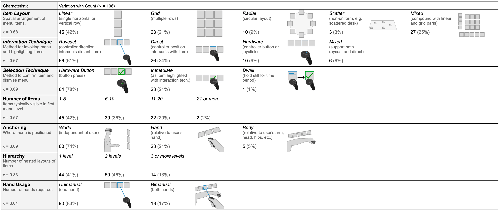
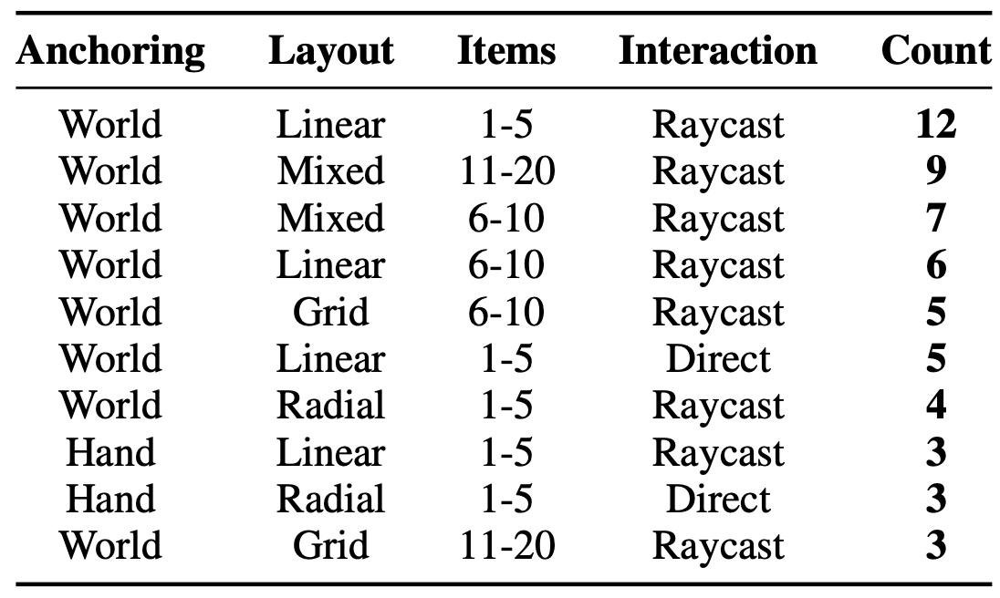
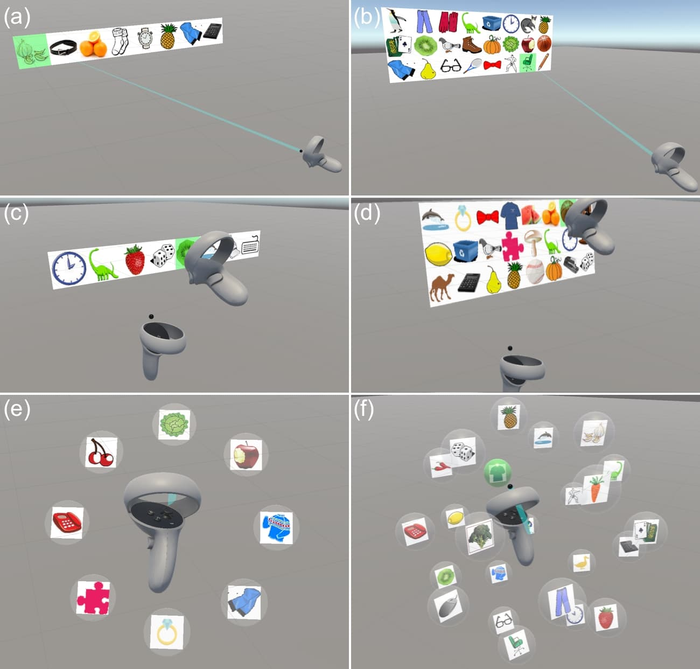
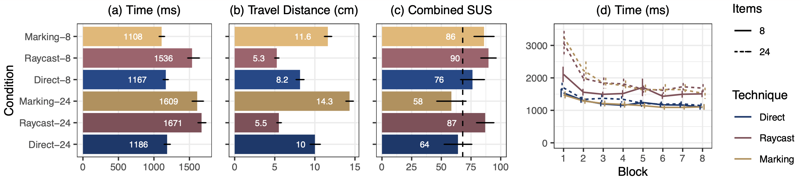
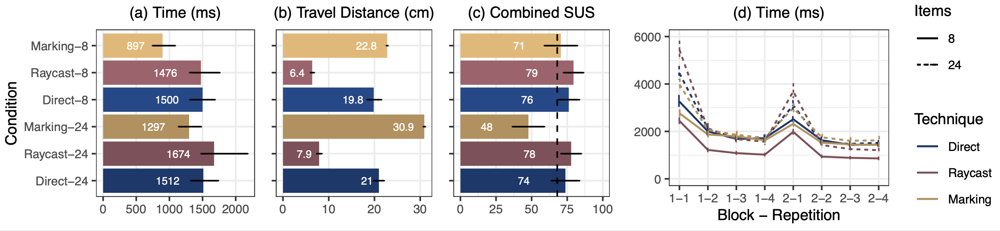

Key Takeaways
- We surveyed 108 VR menus from 84 consumer applications to identify common design characteristics.
- Three menu techniques—raycasting, direct input, and marking menus—were selected for detailed evaluation based on their prevalence and performance.
- We conducted two experiments to compare these menu types in terms of speed, accuracy, and usability with different menu sizes and hierarchical levels.
- The experiments showed that direct input was the fastest, marking menus were efficient with small item sets, and raycasting was the most user-friendly.
- Based on these results, we provided design recommendations for VR menu implementations, emphasizing different techniques for different use cases.
Abstract
We contribute an analysis of the prevalence and relative performance of archetypal VR menu techniques. An initial survey of 108 menu interfaces in 84 popular commercial VR applications establishes common design characteristics. These characteristics motivate the design of raycast, direct, and marking menu archetypes, and a two-experiment comparison of their relative performance with one and two levels of hierarchy using 8 or 24 items. With a single-level menu, direct input is the fastest interaction technique in general, and is unaffected by number of items. With a two-level hierarchical menu, marking is fastest regardless of item number. Menus using raycasting, the most common menu interaction technique, were among the slowest of the tested menus but were rated most consistently usable. Using the combined results, we provide design and implementation recommendations with applications to general VR menu design.
VR Menus in Consumer Apps
We looked at 108 VR menus from 84 popular applications and games, and found that raycasting is the most common method, with direct input coming next. Marking menus, while effective in research, are not used as much in commercial VR. We concentrated on menus that use controllers because they are the most common, leaving out newer hand-tracking methods. This helped us choose which menu types to study further.
Counts and proportions of variations in design characteristics for 108 spatial menus used in popular VR applications.
We also examined the most common combinations of menu characteristics.
The top 10 combinations of anchoring, item layout, number of items, and interaction technique found in the game survey.
Menu Archetypes
We evaluated three VR menu techniques: raycasting, direct input, and marking menus. We combined those with two menu sizes (8 and 24 items) to create six menu archetypes. Raycast menus were anchored in world-space, while direct input and marking menus were controller-based.
The six menu types used in the study: (a) raycasting with 8 items in a linear layout; (b) raycasting with 24 items in a grid layout; (c) direct input with 8 items in a linear layout; (d) direct input with 24 items in a grid layout; (e) marking with 8 items in a 2D radial layout; and (f) marking with 24 items in a 3D spherical layout.
Experiment 1
We recruited 18 remote participants, ensuring they had access to VR headsets with hand controllers. The experiment compared single-level menus with 8 and 24 items, using raycasting, direct input, and marking techniques. Participants completed selection tasks, and we measured trial time, error rate, hand movement distance, and usability using the System Usability Scale (SUS).
Conditions
The experiment tested combinations of menu size (8 and 24 items) and interaction technique (raycasting, direct input, marking). Each participant experienced all conditions in a randomized order.
Results
Direct input was the fastest overall, unaffected by menu size. Marking menus were fast with 8 items but slowed significantly with 24 items. Raycasting was the slowest but received the highest usability ratings. These results highlight the trade-offs between speed and user preference across different menu types.
Experiment 2
We recruited 18 participants, six of whom had also participated in the first experiment after a 12-month gap. This experiment focused on two-level hierarchical menus with 8 and 24 items per level. Similar to Experiment 1, we measured trial time, error rate, hand movement distance, and usability.
Conditions
Participants were asked to complete selection tasks in hierarchical menus using raycasting, direct input, and marking techniques. The task involved making selections across two menu levels, with performance metrics recorded for each condition.
Results
Marking menus were the fastest in hierarchical conditions, regardless of item count. Direct input maintained high usability and performance, particularly for larger item sets. Raycasting remained slower but was consistently rated as user-friendly. These findings indicate that marking menus excel in complex tasks but may need usability improvement at higher numbers of items.
What Can We Learn?
- Implement direct input menus for fast and efficient interaction, especially when dealing with larger item sets.
- Use raycasting for menus where ease of use and user-friendliness are the main priorities.
- Opt for marking menus in scenarios with small item counts to take advantage of their performance benefits.
- Consider user comfort and minimal movement when designing for longer VR sessions, which makes raycasting a good choice.
- Balance speed and usability by combining techniques: use marking menus for quick selections in small sets and direct input for more extensive, detailed interactions.
Publication
J. Wentzel, M. Lakier, J. Hartmann, F. Shazib, G. Casiez and D. Vogel, "A Comparison of Virtual Reality Menu Archetypes: Raycasting, Direct Input, and Marking Menus," in IEEE Transactions on Visualization and Computer Graphics, doi: 10.1109/TVCG.2024.3420236. keywords: {virtual reality;interaction techniques;menus;direct input;raycasting;marking menu}
BibTeX
@ARTICLE{10577478,
author = {Wentzel, Johann and Lakier, Matthew and Hartmann, Jeremy and Shazib, Falah and Casiez, Géry and Vogel, Daniel},
journal = {IEEE Transactions on Visualization and Computer Graphics},
title = {A Comparison of Virtual Reality Menu Archetypes: Raycasting, Direct Input, and Marking Menus},
year = {2024},
keywords = {virtual reality;interaction techniques;menus;direct input;raycasting;marking menu},
volume = {},
number = {},
doi = {10.1109/TVCG.2024.3420236},
pages = {1-15}
}
Contact Us
Questions? Feel free to contact:
- Johann Wentzel (University of Waterloo)
jdwentze [at] uwaterloo.ca - Matthew Lakier (University of Waterloo)
matthew.lakier [at] uwaterloo.ca - Jeremy Hartmann (University of Waterloo)
jeremy.hartmann [at] uwaterloo.ca - Falah Shazib (University of Waterloo)
fshazib [at] uwaterloo.ca - Géry Casiez (Université de Lille)
gery.casiez [at] univ-lille.fr - Daniel Vogel (University of Waterloo)
dvogel [at] uwaterloo.ca